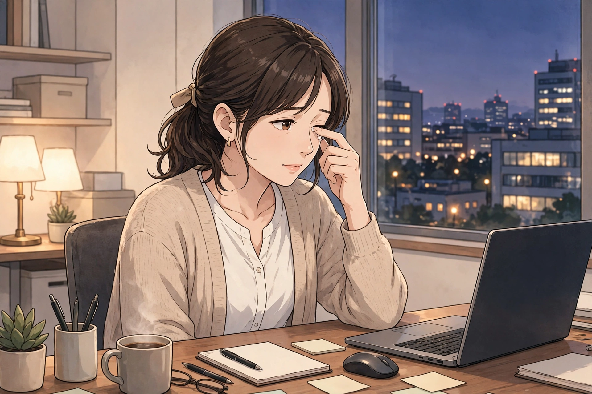

難波で残暑に気になる目の疲れ感｜強い日差しと画面時間の日の過ごし方とセルフケア、受診の目安残暑と目の疲れ感

7月から8月の難波は、梅雨明けの強い日差しがミナミの通りに照りつけ、歩いているだけで目がまぶしく感じやすい時期です。なんば駅の地下街から地上へ出た瞬間、照り返しの強い光に目を細めたり、スマートフォンの画面が見づらく感じたりすることはありませんか。残暑の目の疲れ感とは、強い日差しと画面時間の長い日が重なる時期に、目の重さや乾き、かすみ、肩や首のこわばりなどを感じやすくなる状態を指す言葉として使われることが多いです。7〜8月は、日差しの強さ、地下街と地上の明るさの行き来、冷房のきいた室内での画面時間の長さが重なり、こうしたゆらぎを感じやすい時期です。このコラムでは、残暑に目の疲れ感が気になるときの要因の整理、7〜8月の過ごし方とセルフケア、受診の目安についてお伝えします。
#難波 残暑 目の疲れ感#残暑 目の疲れ#目の疲れ セルフケア#難波 女性専用 サロン 残暑
１．残暑の目の疲れ感とは、どんな状態か
残暑の目の疲れ感は、目が重い、乾いた感じがする、かすんで見える、まぶしさを感じやすい、といった感じ方を指す言葉として使われることが多いです。目の疲れ感の一般的なとらえ方は、眼精疲労の症状ページでも紹介しています。
残暑の目の疲れ感の現れ方は、ひとつの原因だけで説明できるものではありません。日差しの強さ、画面を見る時間、睡眠の質、室内外の明るさの行き来などが関わっていると言われています。目の疲れ感を感じたら、その日の過ごし方を振り返ってみることが、セルフケアの出発点になります。
感じ方には個人差があり、目だけが重い、目の奥が重い、肩や首まで重だるい、といった感じ方があります。同じ7〜8月でも、昼間にミナミを歩き回った日に強く感じる人と、冷房のきいた室内で画面を見続けた日に強く感じる人がいます。感じ方の違いを書き留めておくと、自分のゆらぎのパターンをつかむ手がかりになります。
7〜8月は、夏休みやお盆の外出、買い物、帰省の移動などで予定が変わりやすく、目を使う場面が増えることもあります。予定は無理に詰め込まず、ゆとりを持たせておくと、目のゆらぎを感じにくくなります。
２．考えられる要因
残暑に目の疲れ感が気になりやすくなる背景は、ひとつとは限らず、いくつかの要因が重なっている場合もあります。ここでは一般的に挙げられるものを整理しますが、特定の原因を断定するものではありません。
- 強い日差しと照り返し：7〜8月のミナミは、直射日光に加えて、アスファルトや建物のガラスからの照り返しも強くなります。まぶしい光に目を細める時間が長くなると、目のまわりの重さを感じやすくなると言われています
- 地下街と地上の明るさの行き来：なんば駅の地下街は涼しく落ち着いた明るさですが、地上へ出ると一気に強い日差しに変わります。明るさの差が大きい場所を行き来すると、目が明るさになじむまでのあいだ、まぶしさやかすみを感じやすくなると言われています
- 画面時間の長さ：冷房のきいた室内では、スマートフォンやパソコンの画面を見る時間が長くなりがちです。画面を見続けると、まばたきの回数が減り、目の乾きを感じやすくなると言われています
- 冷房と空気の乾き：冷房のきいた室内は、空気が乾きやすくなります。乾いた空気のなかで長く過ごすと、目の乾きを感じやすくなる場合があります
- 睡眠リズムの乱れ：熱帯夜が続くと寝つきが悪くなり、朝起きる時間がずれることがあります。睡眠のリズムがずれると、朝起きたときの目の重さが目立ちやすくなります
- ミナミでの外出と人混み：残暑の日のなんば駅や道頓堀は、人の流れで歩きにくくなります。まぶしい日差しのなかで周囲に気を配りながら歩くと、目と肩に力が入ったまま歩く時間が長くなります
「残暑だから当然だろう」と決めつけず、目の疲れ感が長く続く場合は医療機関で確認することが大切です。花粉の時期の目の疲れ感については、コラム「難波で花粉の始まりに気になる目の疲れ感｜要因の整理とセルフケア、受診の目安」もあわせてご覧ください。
暑い日に汗をかいたまま冷房のきいた場所に入ると、体が冷えて目のまわりの重さを感じやすくなる、と言われることがあります。天気予報で気温と日差しの強さを知っておくと、一日の過ごし方を調整する手がかりになります。
日差しの強い日は、サングラスや日傘で目に入る光をやわらげる工夫が役立ちます。ただし、サングラスは色の濃さや見え方に個人差があるため、歩きにくさを感じないものを選ぶことが大切です。
３．7〜8月の過ごし方とセルフケア
7〜8月のセルフケアは、強い日差しに目をさらしすぎない工夫と、画面を見る時間を区切る習慣が中心になります。
- 外出のときは日傘や帽子、サングラスを使う：ミナミを歩くときは、日傘や帽子を使い、直射日光が目に入り続けないようにしましょう。日陰を選んで歩く工夫も役立ちます
- 地下街から地上へ出るときは、目をならす時間をとる：地下街から地上へ出た直後は、強い日差しに目を細めたくなるものです。建物の陰でひと息入れてから歩き出すと、まぶしさを感じにくくなります
- 画面を見る時間は20〜30分ごとに区切る：スマートフォンやパソコンを見るときは、20〜30分ごとに画面から目を離し、遠くを見る時間を入れましょう。窓の外の景色を見るだけでも、目の緊張がゆるみやすくなります
- 目を温める時間をつくる：帰宅後は、蒸しタオルを目の上にのせて、目もとを温める時間をつくりましょう。タオルは熱すぎない温度にして、目を閉じてゆっくり休ませます
- 冷房の風が目に直接当たらないようにする：室内では、冷房の風が顔に直接当たらない席を選びましょう。風が当たる場所では、風向きを変える工夫が役立ちます
- 夜は寝る1時間前から画面を見る時間を短くする：熱帯夜は、テレビやスマートフォンを見る時間を区切り、寝る1時間前からは画面を見る時間を短くしましょう。寝室を少し涼しくして、眠りやすい環境を整える工夫も役立ちます
- 目の疲れ感の様子を簡単に記録する：「日差しの強い日はどうだったか」「画面を見続けた日はどうだったか」などを手帳に書き留めると、次の夏の過ごし方の備えに役立ちます
残暑の日にミナミへ出かけたあとは、帰宅してからの過ごし方が大切です。汗をかいた服を替え、温かい飲み物でひと息入れてから、蒸しタオルで目もとを温め、ぬるめのお湯にゆっくりつかって体を温めましょう。外出のあとに体を冷やしたまま夜を迎えると、眠りの浅さにつながることがあります。買い物や用事が長引いた日は、夜の予定を詰め込みすぎず、早めに休む時間をとる工夫も役立ちます。
暑い日が続くときは、室内での過ごし方も見直してみましょう。一日中座りっぱなしにならないよう、30分ごとに立ち上がる時間を入れ、両腕をゆっくり回す、肩甲骨を寄せるように胸を開く、といった小さな動きを挟むと、目のまわりや肩の重さを感じにくくなります。
大切なのは、強い日差しに目をさらしすぎない工夫と、画面を見る時間を区切る習慣を、無理のない範囲で続けることです。夏の疲労感全般については、コラム「難波で夏バテの始まりに気になる全身の疲労感｜要因の整理とセルフケア、受診の目安」もあわせてご覧ください。
セルフケアは、無理のない範囲で行うことが前提です。体調がすぐれない日や、痛み・腫れが気になるときは、セルフケアを控えて、まず医療機関への相談をご検討ください。
４．受診の目安
次のような場合は、セルフケアやサロンでのケアより先に、医療機関への相談をご検討ください。
- 目の疲れ感が数週間以上続き、日常生活に支障がある
- 目のかすみや見えにくさが続き、運転や細かい作業に支障がある
- 目の痛み、充血、腫れが続く
- 頭痛や吐き気をともなう目の重さが続く
- 目薬を使っても、目の乾きや重さに変化がない
目の疲れ感の背景には、医療機関での確認が必要な状態が隠れていることもあります。気になる状態が続くときは、自己判断で様子を見続けず、かかりつけ医や医療機関へ相談してください。
受診の目安に当てはまらなくても、目の疲れ感が気になるときは、身近な人に相談してみることも大切です。家族や友人に話すことで、自分の体の状態を整理する手がかりになることがあります。
受診のときに伝えることも、まとめておくと役立ちます。目の疲れ感を感じる時間帯（日差しの強い昼間・画面を見続けたあと・夕方）、目の疲れ感の感じ方、続いている期間、睡眠の様子、7〜8月の過ごし方をメモしておくと、医師に伝えやすくなります。
５．ステラシリウス（難波）のご案内
ステラシリウスは、大阪市浪速区幸町1-2-9 RE-005 502号（JR難波駅 徒歩5分）にある女性専用サロンで、現在営業中です。料金はオイルマッサージ＋美容整体の90分コース10,000円（税込）のみ、営業時間は月〜土17:00〜22:00／日曜12:00〜22:00、完全予約制です。施術は施術歴30年・鍼灸師国家資格の平賀伸人が担当します。施術室はシャワー完備の完全個室で、施術の前後にシャワーをご利用いただけます。当店では鍼灸施術は行いません。
ご来店後は、カウンセリングで当日の体調と気になる部位をうかがい、ご希望の方はシャワーで汗を流して施術着にお着替えいただきます。美容整体で体のバランスを整えてから、オイルマッサージで全身をほぐします。施術後はシャワーでオイルを洗い流してゆっくりお支度いただき、最後にアフターカウンセリングで体の状態とセルフケアのポイントをお伝えします。ご予約はLINE公式アカウントから承っています。残暑に目の疲れ感が気になるときは、無理のない日程でご相談ください。